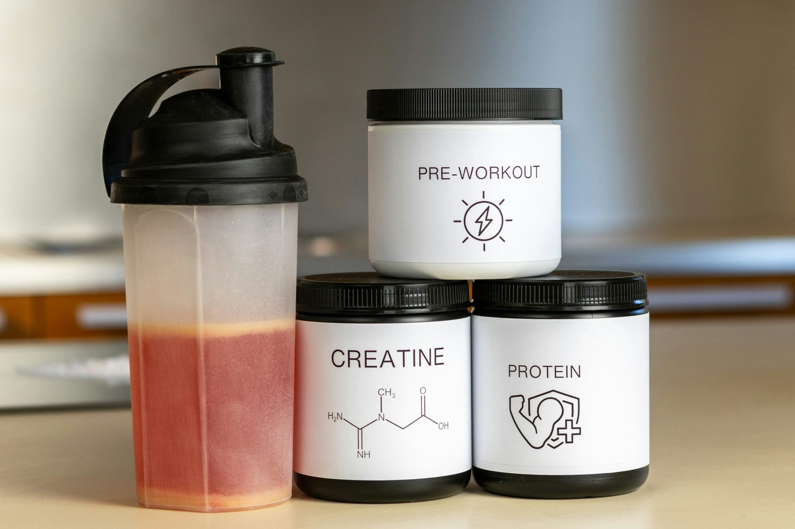

Зайдите в любой магазин спортивного питания — и найдёте креатин и предтреник рядом друг с другом, часто с похожими маркетинговыми формулировками «повысьте свою результативность». Но они работают почти совершенно по-разному, в совершенно разных временных масштабах, и отвечают на разные вопросы о ваших тренировках. Понимание этой разницы важнее, чем выбор того, у которого этикетка ярче.
Что на самом деле делает креатин
Креатин моногидрат увеличивает количество фосфокреатина, запасённого в мышцах, который используется для быстрой регенерации АТФ — основной энергетической валюты для коротких, интенсивных мышечных усилий вроде подъёма тяжёлого веса или спринта. Больше запасённого фосфокреатина означает немного больше возможностей для этих коротких, максимальных усилий, что за недели тренировок превращается в способность делать чуть больше повторений или поднимать чуть больший вес — небольшое преимущество, значительно накапливающееся за месяцы стабильных тренировок.
Что на самом деле делает предтреник
Предтренировочные добавки обычно представляют собой смесь ингредиентов — чаще всего кофеин, бета-аланин, цитруллин и иногда другие стимуляторы — разработанную для повышения бодрости, отсрочки утомления и улучшения притока крови к мышцам во время одной тренировочной сессии. В отличие от креатина, эффекты предтреника острые: они проявляются в течение 20-45 минут после приёма и проходят за несколько часов, без накопительного долгосрочного эффекта от одной дозы к следующей.
Временной масштаб — фундаментальное отличие
Это самое важное различие между ними. Креатин — накопительная, долгосрочная добавка: его польза нарастает постепенно, по мере насыщения запасов фосфокреатина в мышцах примерно за 2-4 недели стабильного ежедневного приёма, и польза сохраняется, пока вы продолжаете принимать его стабильно. Предтреник острый и специфичен для сессии — вы чувствуете его эффект во время одной тренировки, а завтрашняя сессия не получает остаточной пользы от сегодняшней дозы.
Доказательная база каждого
Креатин моногидрат — одна из наиболее обширно исследованных добавок в спортивном питании, с десятилетиями исследований, стабильно подтверждающих умеренные, но реальные улучшения силы, мощности и мышечной массы в сочетании с силовыми тренировками. Доказательная база предтреника более неоднозначна и зависит от ингредиентов — конкретно кофеин имеет солидную научную поддержку для улучшения острой результативности и снижения воспринимаемого усилия, но многие другие распространённые ингредиенты (вроде фирменных «энергетических смесей») имеют гораздо более слабые или непоследовательные доказательства заявленной пользы.
Побочные эффекты и соображения
Креатин обычно очень хорошо переносится, самый частый побочный эффект — лёгкая задержка воды в первые недели, так как мышцы удерживают немного больше воды вместе с повышенным фосфокреатином. Стимулирующий состав предтреника (в основном кофеин) может вызывать нервозность, повышенное сердцебиение и нарушение сна при приёме слишком поздно днём или в высоких дозах, а регулярное использование может создавать толерантность, требующую более высоких доз для того же субъективного эффекта со временем.
Стоимость и практическая ценность
Креатин моногидрат недорог — часто стоит всего несколько центов за суточную дозу — и не требует циклирования или точности приёма по времени; приём в любое время дня работает одинаково хорошо, так как его польза приходит от стабильного ежедневного насыщения, а не острого времени приёма. Предтреник обычно стоит дороже за порцию, и его ценность более переменна, так как большая часть эффекта сводится к содержанию кофеина, который можно получить дешевле из кофе, если остальные ингредиенты не дают вам лично значимой дополнительной пользы.
Нужна ли вам вообще какая-либо из добавок?
Ни одна не является сколько-нибудь необходимой для тренировочного прогресса — обе являются опциональными вспомогательными средствами поверх основ, которые реально определяют результат: стабильные тренировки, прогрессивная перегрузка, достаточный белок и достаточные общие калории. Тем не менее, у креатина гораздо более сильная доказательная база и более выгодное соотношение цена/польза из двух, что делает его разумным низкорисковым дополнением для большинства регулярно тренирующихся людей. Предтреник — больше вопрос личных предпочтений для тех, кому реально полезен острый прилив энергии и концентрации для конкретной сессии, а не что-то с той же накапливающейся долгосрочной пользой, которую даёт креатин.
Частые вопросы
Можно ли принимать креатин и предтреник вместе?
Да — они работают через совершенно разные механизмы и часто комбинируются, с креатином, принимаемым ежедневно независимо от времени, и предтреником, принимаемым незадолго до тренировки для острых эффектов.
Безопасен ли креатин для долгосрочного использования?
Креатин моногидрат — одна из наиболее исследованных спортивных добавок, с десятилетиями исследований, подтверждающих его безопасность для долгосрочного ежедневного применения у здоровых взрослых в стандартных дозах.
Есть ли у предтреника длительная польза, как у креатина?
Не таким же образом — эффекты предтреника острые и специфичны для сессии (энергия, концентрация, приток крови), тогда как креатин работает накопительно за недели, увеличивая запасённый фосфокреатин в мышечной ткани.
Нужна ли мне вообще какая-либо из добавок?
Нет — обе являются опциональными вспомогательными средствами, а не необходимостью. Стабильные тренировки, достаточный белок и достаточные калории значат для результата гораздо больше, чем любая из добавок сама по себе.